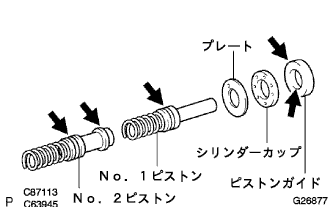
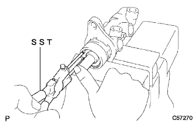
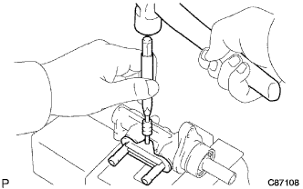

ブレーキマスタシリンダASSY 組み付け |
| 1. ブレーキマスタ シリンダSUB-ASSY点検 |
ブレーキマスタシリンダボデーの内面に損傷がないことを点検する。
| 2. ブレーキマスターシリンダーキット取り付け |
|  |
新品のNo.2ピストン、No.1ピストンおよびピストンガイドにラバーグリスを塗布する。
No.2ピストンをマスターシリンダボデーに取り付ける。
プレート、シリンダカップおよびピストンガイドをNo.1ピストンに取り付ける。
No.1ピストンをマスターシリンダボデーにまっすぐに取り付ける。
ピストンを押し込んだ状態で、ブレーキマスタシリンダユニオン取り付け部のポートからストレートピンを挿入する。
|  |
ピストンを押し込んだ状態で、SSTを使用して、新品のホールスナップリングを取り付ける。
新品のOリングにラバーグリスを塗布する。
Oリングをマスターシリンダボデーに取り付ける。
| 3. チェックバルブ グロメット取り付け |
ブレーキマスタシリンダASSYにチェックバルブ グロメット2個を取り付ける。
| 4. ブレーキマスタシリンダユニオン取り付け |
|  |
ピンポンチ(5mm)およびハンマーを使用して、ブレーキマスタシリンダリングピンを打ち込み、ブレーキマスタシリンダユニオンを取り付ける。